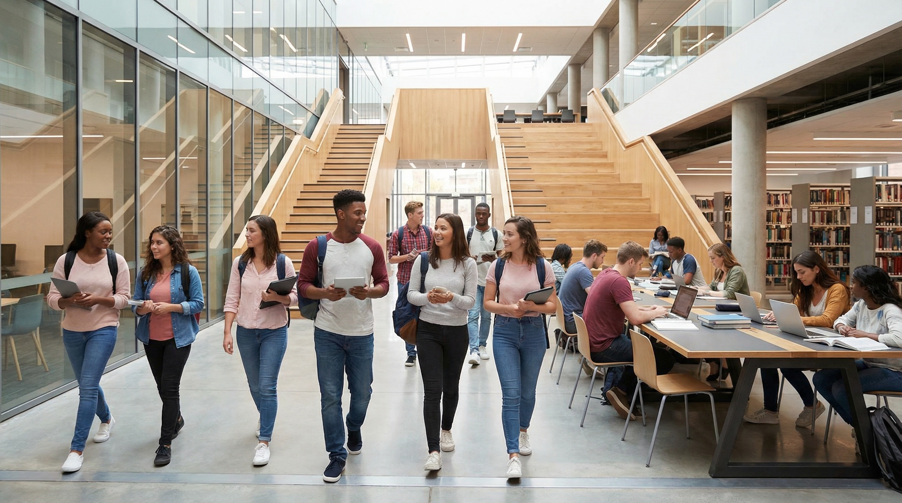
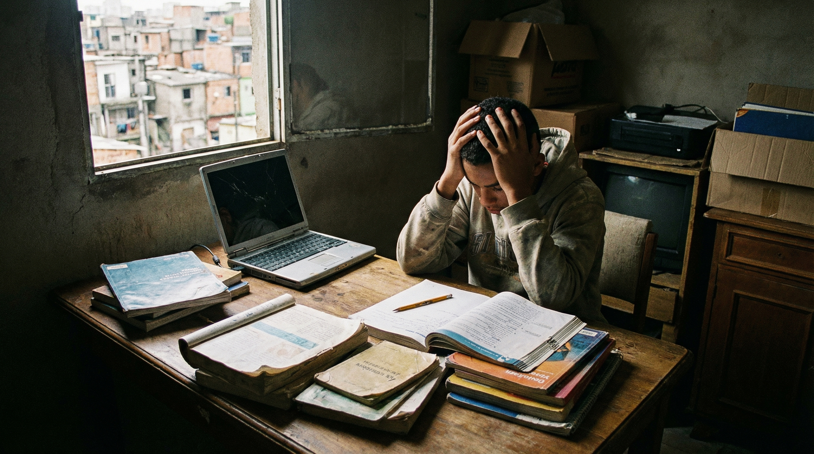
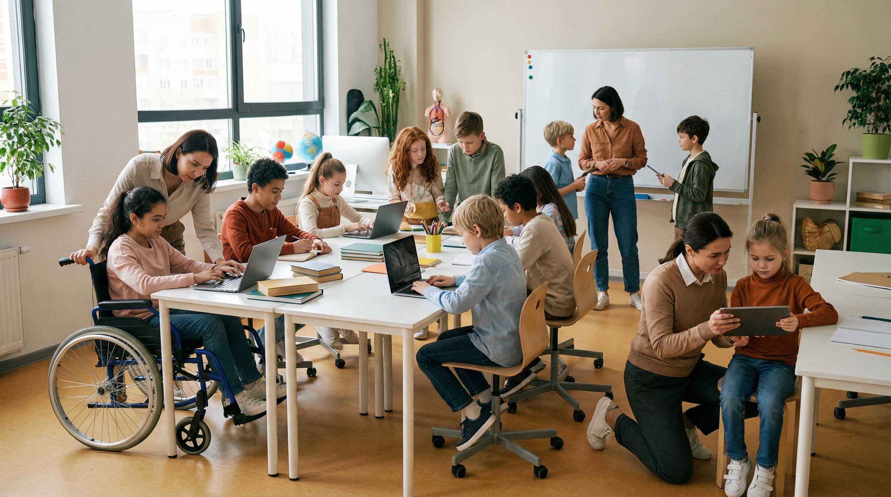
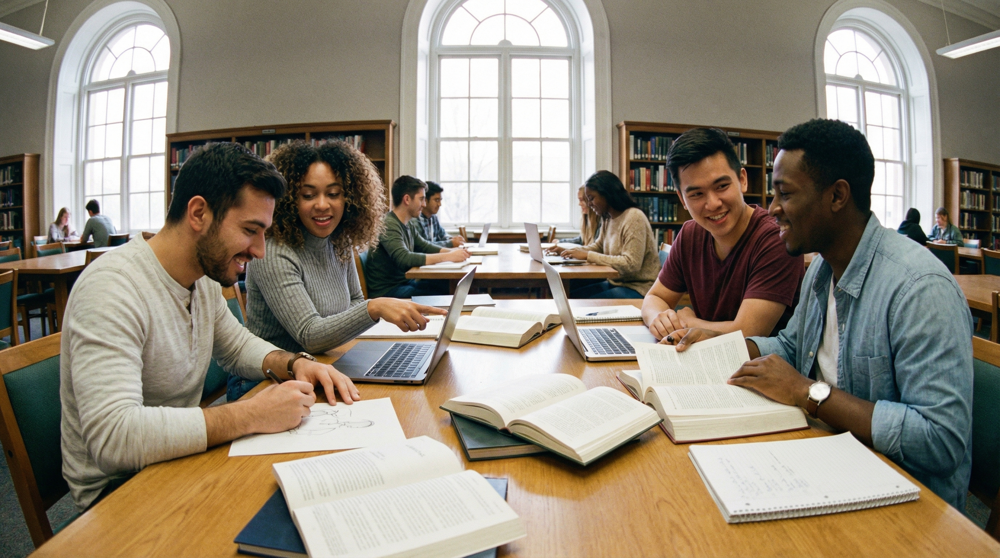

Breaking Barriers to Education
Introduction

Education is one of the most powerful tools for personal growth, social mobility, and long-term development. It helps people build knowledge, improve their confidence, and prepare for future careers and responsibilities. However, not everyone has the same opportunity to learn in a safe, supportive, and effective environment.
Barriers to education continue to affect millions of students around the world. These barriers can appear in different forms, including poverty, lack of school resources, digital inequality, discrimination, and limited access to quality learning spaces. For many students, education is not simply about attending school - it is also about whether they have the support, tools, and opportunities needed to succeed.
This issue is closely connected to Sustainable Development Goal 4: Quality Education, which promotes inclusive and equitable learning opportunities for all. Understanding these barriers is important because it helps students, communities, and institutions recognise what prevents progress and what actions can be taken to improve access to education.
Main Challenges Students Face

Many students face difficulties that make learning harder than it should be. One major barrier is financial inequality. Some families may struggle to afford school supplies, internet access, transportation, tuition, or learning devices. Even when education is available, hidden costs can still create pressure and reduce participation.
Another common barrier is the lack of educational resources. In some schools or communities, students may not have enough books, updated materials, computers, or qualified teachers. This can reduce the quality of learning and make it difficult for students to reach their full potential.
The digital divide is also an important issue in modern education. Technology has become a major part of learning, especially after the growth of online classes and digital platforms. However, not all students have reliable internet, laptops, or quiet study spaces at home. This creates unfair differences in learning opportunities.
Some students also face social and personal barriers, such as language difficulties, disability-related access issues, discrimination, low confidence, or mental health challenges. These factors can affect motivation, attendance, classroom participation, and overall academic performance.
Why Barriers to Education Matter
Barriers to education do not only affect individual students - they also affect communities and society as a whole. When students are unable to access quality learning, the result is often reduced opportunity, lower confidence, and fewer chances for long-term success.
Education plays a key role in helping people develop skills, think critically, and make informed decisions. It also supports employment, health awareness, communication, and social participation. If barriers remain in place, inequality becomes stronger and opportunities become less fair.
For young people especially, missing out on education can have a lasting impact. Students who are left behind may struggle to gain the skills needed for future careers or higher education. This can create a cycle where disadvantage continues across generations.
That is why improving access to education is not only a school issue - it is a development issue. Supporting better education means supporting stronger communities, better futures, and more equal opportunities for everyone.
Possible Solutions

Although the challenges are serious, there are many practical ways to reduce barriers to education. One of the most important steps is improving equal access to learning resources. This includes providing affordable internet, digital devices, books, and learning materials to students who need them.
Schools and universities can also help by creating more inclusive learning environments. This means supporting different learning needs, improving accessibility, offering flexible teaching methods, and ensuring students feel respected and encouraged.
Community support also makes a big difference. Local organisations, volunteers, peer mentors, and educational programmes can help students who need extra guidance or academic support. Sometimes small actions - such as tutoring, study groups, or sharing resources - can create a strong positive impact.
Teachers and institutions can further reduce barriers by using more student-friendly learning approaches, such as interactive teaching, practical examples, and supportive feedback. When students feel engaged and included, they are more likely to stay motivated and succeed.
What Students Can Do

Students themselves can also contribute to improving education, even through simple everyday actions. One helpful step is supporting classmates through peer learning. Sharing notes, explaining difficult topics, or studying together can help reduce gaps in understanding.
Students can also promote digital inclusion by sharing useful free resources, educational tools, and learning platforms. Helping others find reliable information can make learning more accessible and less stressful.
Another important action is encouraging a more inclusive learning culture. This includes being respectful, supportive, and open to different learning styles and personal experiences. Small positive actions in classrooms and study groups can help others feel more confident and involved.
Students can also raise awareness through discussions, projects, and campaigns that focus on equal learning opportunities. When students actively care about educational access, they help build a stronger and more supportive academic community.
Conclusion
Barriers to education remain one of the biggest challenges to achieving true quality learning for all. Financial pressure, lack of resources, technology gaps, and social inequality can all prevent students from reaching their full potential.
However, these challenges are not impossible to overcome. With better support, inclusive systems, stronger communities, and student-led action, education can become more accessible and more meaningful for everyone.
Improving education is not only about solving problems inside the classroom - it is about creating a future where every learner has the chance to grow, succeed, and contribute to society. That is why understanding and reducing barriers to education is such an important step toward achieving Quality Education for All.